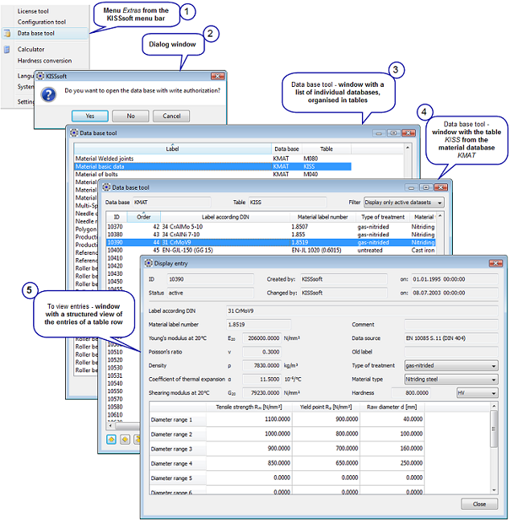

|
|
|


查看数据库条目
要打开数据库，请选择 > 菜单选项，如图 9.5 所示（）。此时会出现一个对话框，询问您是否要以写权限打开数据库（）。如果单击 ，则可以编辑数据库条目，否则数据库条目为写保护。如果选择 ，则会打开实际的数据库工具窗口（），但处于只读模式。在那里，您可以从分配给特定数据库的列表中选择表。表的行包含设置数据库条目参数的值。列包含数据库条目的参数，即不同材料的屈服点值。本节介绍如何编辑 数据库条目。您也可以先在数据库工具窗口中选择一行，再单击 进行确认来显示表条目（）。此时会打开 窗口，以结构化方式显示表行中的数值（）。

图 9.1: 访问数据库条目
注意：
使用 KISSsoft 数据库工具，可更改数据库并添加自己的条目。存储在数据库中的数据在某种程度上是“敏感”的，因此输入错误的值可能会导致最初难以察觉的后果，但最终可能带来深远且严重的后果。因此，当用户打开数据库时，会询问用户是否需要写入授权。如果回答“否”，则可以查看表中的数据，但不能更改它。
如果您想绝对确保数据库保持不变，可以对其相应文件（*）进行写保护。任何以写权限打开表的尝试都会导致错误消息，并且表通常会以写保护模式打开。要更改文件的写保护属性，请在 Windows® 资源管理器中右键单击该文件，然后选择 。在 对话框中，单击 选项卡，然后选中 复选框。如果要更改写保护的文件，请首先取消选中 复选框，或以不同的名称保存该文件。
Viewing database entries
To open the database, select the > menu option, as shown in (Figure 9.5, ). A dialog window appears with the question whether you want to open the database with write authorization (). If you click on , you can edit the database entries, otherwise they are write protected. If you select , the actual database tool window () opens, but in read-only mode. There, you can select a table from a list that is assigned to a particular database. The row of a table contains the values that set the parameters for the database entry. The columns contain the parameters for the database entries, i.e. values for the yield point of different materials. This section describes how to edit database entries. You can also display table entries by selecting a row in the database tool window and then confirming this by clicking (). The window opens with a structured display of the value amount from a table row ().
Figure 9.1: Accessing database entries
Note:
With the KISSsoft database tool you can change the databases and expand them with your own entries. The data stored in the databases are in a sense "sensitive", so that incorrectly entered values can have consequences that are initially imperceptible, yet eventually far-reaching and serious. For this reason, when you open the database you are asked whether the access should have write authorization. If you answer this question with "No"", you can view the data in the tables but not change it.
If you want to make absolutely sure that the databases remain unchanged, you can write protect their corresponding files (*). Any attempt to open a table with write authorization results in an error message and the table will normally be opened in write protected mode. To change a file's write protection attribute, right-click on the file in Windows® Explorer, and then click on . Click in the dialog field, on the tab, and then click the checkbox. If you want to make changes to a write protected file, first either deselect the checkbox or save the file with a different name.